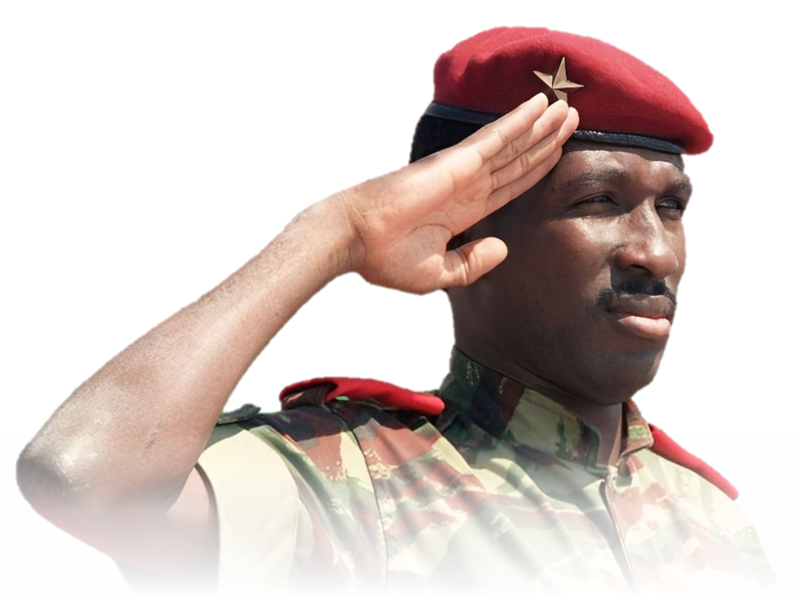

Dear Sankara,

04/08/2026 - 18:30 (UTC+7)
Good morning, good afternoon, good evening, or goodnight, dear comrades. Today, on the 4th of August, 1983, 43 years ago, Burkinabè revolutionary Marxist, African socialist, and pan-Africanist Thomas Sankara became the president of Burkina Faso. Though his methods of obtaining his position were not democratic, the effects he had on the nation cannot be ignored. In the four years of his presidency, not only did he free Burkina Faso from French imperialism, but he also boosted literacy rates and the economy, advocated for women's rights, and improved the well-being of the Burkinabè people. Unlike many African leaders of his time, he actually cared for his people. Sankara ever refused to use an air conditioner in his office because he believed that since many of his own people could not have it, neither should he. He lowered his salary to $450 a month and limited his possessions to a car, four bikes, three guitars, a fridge and a broken freezer. He also promoted nationalism by requiring public servants to wear a traditional tunic, woven from Burkinabè cotton and sewn by Burkinabè craftsmen. Sankara disappropriated the country’s economic elite who controlled most of the arable land and real estate at that time. The fields were divided between subsistence farmers and in the cities social housing was constructed. He even declared the whole year of 1985 rent free. Sankara has always been a personal hero of mine ever since I really started learning about socialism, and though he may not have been a perfect president, he sure was a great one. To me, Sankara isn't only a symbol of socialism but also of pan-Africanism and anti-imperialism as a whole and should be celebrated as such. I find it so sad to see that he was never officially celebrated in his own homeland up until very recently during Traoré's presidency. It's such a shame many do not know of him or what good he has done, as though I myself am not Burkinabè or have any real relations to Burkina Faso, I still believe Sankara is a man worth celebrating. So today I post this to show my gratitude towards Sankara and all the good he has done not only for the Burkinabè people but also for the name of socialism. I hope you all can understand why I decided to post this. As always, stay tuned and stay proud, comrades!
“While revolutionaries as individuals can be murdered, you cannot kill ideas” -Thomas Sankara

President Dave of Tanomadala